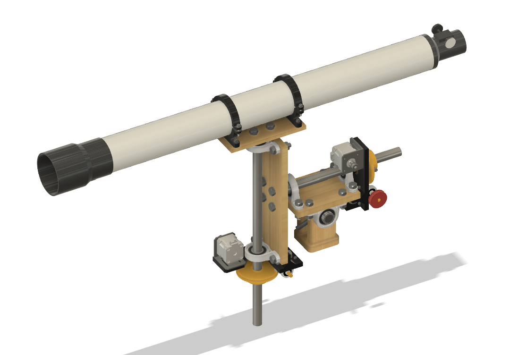
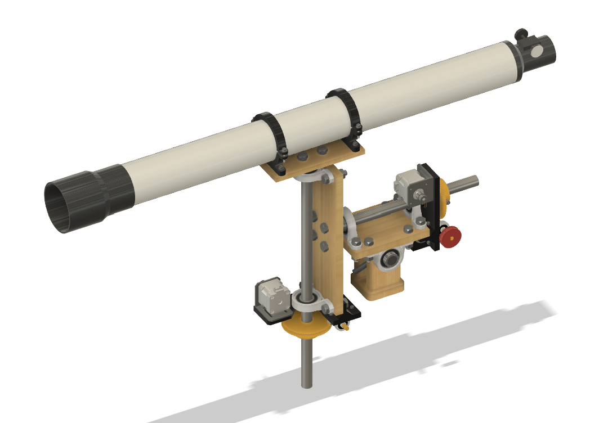
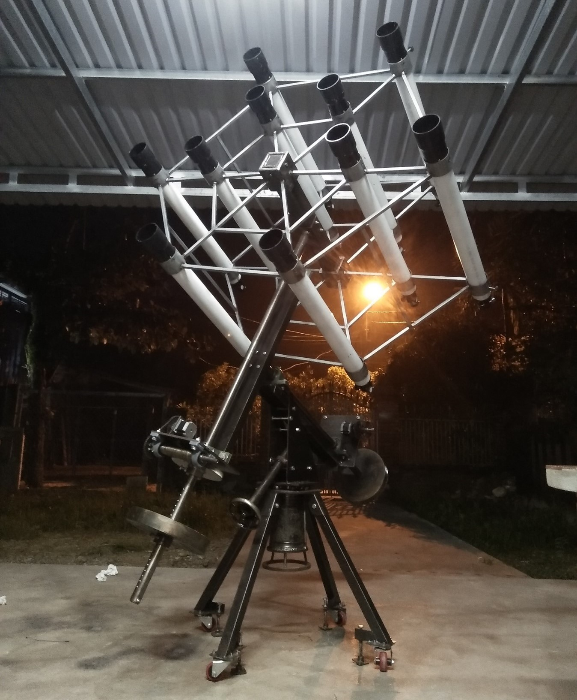

Ngo Quoc Huy
I am currently a Junior Mechatronics Engineering student at Fulbright University Vietnam,
with strong interest in Space Technology, Embedded Systems, and Robotics. The majority of
my experience has involved building some student's project-based learnings which are
inter-disciplines of different engineering aspects, mostly focus on creating and optimizing
the automation process.
This website serves as an online portfolio so that I can publically share about my passion of pursuing an
amazing and proffessional engineering career. Welcome to my world where, hopefully, you might find some
interesting projects or an inspring engineer's friend!
 Spring 2024 - Junior Student - University

Spring 2024 - Junior Student - University

This is my personal project for the Mechanical Design course, and it’s also an improved version of
a project I made during my high school.
As its name suggests, the device is a mechanical robotic arm with 4-DOF (degrees of freedom) so that it can simulate the motion of the Earth
to navigate the telescope and stay fixed on any astronomical objects automatically. By applying the properties of anti backlash worm gear
for driven mechanism, the motion resolution of the robotic arm is extremely small, up to 1.116 arcsecond (~ 0.00031 degree), so that it
can keep any space objects within the telescope’s view for all day. The whole mechanical system will be controlled by an electrical box,
it’s also my another upcoming project after this one.
2023 - University Research Project

This is a group research project launched since April 2022, focusing on designing a
laboratory apparatus for experimental structural analysis. The system includes an automatic loading
frame for beam bending, a metal beam model with supports and load points, and an removable electrical
box with integrated sensors and data acquisition system. I mainly worked on the electrics and programming
in this project, where I am responsible for the hardware and software communications among sensors,
actuators, and Raspberry Pi 4 computer.
Fall 2023 - Junior Student - University

This is the term-project for Computer Organization course in my university. I created a simple computer
using logic gates and Finite-state Moore machine on CircuitVerse, which can store the student’s information
for verifying to access the university’s facilities within limited slots and duration. This is a project-based
learning to apply the knowledge of finite state machine and logic gates from the course into real-life problem.
Spring 2023 - Junior Student - University

This is my final project in the Electrical Circuits and Devices course, in which I was introduced to the PCB
(Printed Circuit Board) design and fabrication using Altium Designer application. This device is a electrical
cabinet lock that can store up to 127 different fingerprint models and other modification modes for users,
such as Admin mode to add new or remove registered fingerprints. Our team designed a particular PCB to handle
all the electrical components using Altium Designer, then tried to come up with a final product with
industrial-standard packaging and testing.
This is a personal project I made in my last year of high school, which winned the 1st place of
Provincial Science and Engineering Fair 2020. Wood cellular structure will be impreganted with epoxy resin
to increase their dimensional stability and change the wood’s properties under pressure and vacuum.
Regard to this manual wood stabilizing technique, the project aims to turn the entire human-depended
process into automatic production chain based on pneumatic valves and electrical control.

The first engineering project I’ve made during my high school and winned the 4th place
of National Science and Engineering Fair 2019. This project serves as a simulation of astronomical
coordinate system, naviagting telescope to any space objects based on their coordinates.
The most heavy part is mechanical design, I have to design a mechanical system
for precise and stable gear driven on two axes. Then, controlled by two stepper motors for real-time
adjustment of telescope’s view. At the end, I could control the telescope throught my laptop’s screen
and it worked smoothly, but there is room for improvement, such as simplified
the initial setups for user and it is excellent to save all required data into the electrical box
instead of bring along a laptop with internet connection for each time.